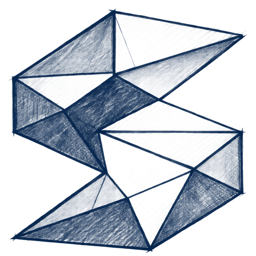

Serenitix
Software factories can test code and scan it for known bug patterns. They still cannot reliably tell whether a commit changed what the system is allowed to do.
Many dangerous changes have one shape: a patch removes or weakens a check, and an input can now reach a privileged operation it could not reach before. Tests still pass, because the happy path is unchanged. Snapshot analysis still passes, because it looks for known bad patterns in one version of the code. Neither one asks whether this commit created a new path from untrusted input to a privileged action.
The question gets harder as more code is written by AI coding agents. Agents can produce patches faster than people can review them, and each one still needs the same check.
VeriFlow treats a security regression as a before-and-after comparison, not a search for a known signature. It builds a Differential Guarded Flow Graph (DGFG) from the baseline and the candidate version. In that graph, every value flow carries the branch conditions under which it happens, so a check becomes a label on the path from an input to the operation that uses it. We call these paths Guarded Flow Paths.
A policy names a source, a sensitive operation, and the condition under which reaching that operation is a violation. One reachability question then answers every such policy, and different bug classes become instances of the same specification shape. Running it on both sides of a change shows the authority gained or lost: which sensitive operations an input can now reach, and which guard protected each path before. The result is a witness path a developer can read, not a generic warning.

@ %is_ok; after it, they hold @ true. The highlighted edges are the newly unguarded witness path from %doc_id; the grey chain is the deleted access check.This is research evidence on small examples. It is not yet a production tool.
The planned work moves VeriFlow from prototype evidence to a control a software factory can run. All of the following is planned, not yet demonstrated:
Nathan Dautenhahn and Sergey Bratus, Changes in the Guard: Detecting Authority-Exposing Patches with Differential Guarded Flow Paths. 2nd Workshop on Software Understanding and Reverse Engineering (SURE '26), The Hague, 2026. DOI: 10.1145/3847158.3847387. The paper page includes the PDF, slides, the interactive viewer, and the demo.
How to engage. Our solution has been competitively assessed by the Defense Advanced Research Projects Agency (DARPA) and has been deemed “awardable” in the Expedited Research Innovation System (ERIS) Marketplace, making it available to view and easily procurable by the Department of War. Government users can find it by searching the exact title, “VeriFlow: From Bug Queries to Authority Validation,” in the ERIS Marketplace at darpaconnect.us/eris (listing 4-26-2935). If you run a software factory, a mission-system pipeline, or a program evaluating AI-generated code and want to discuss this listing, contact Serenitix.